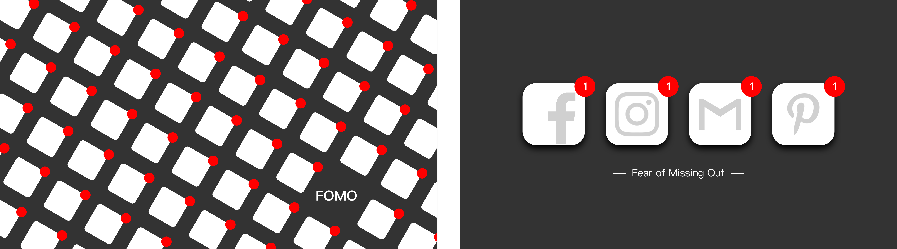
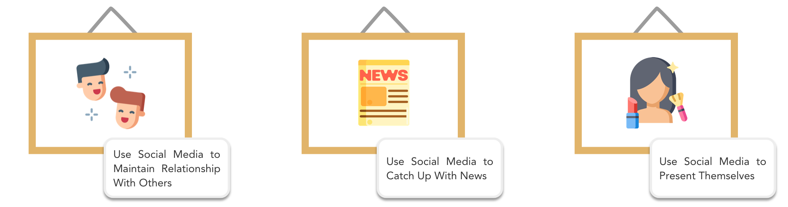
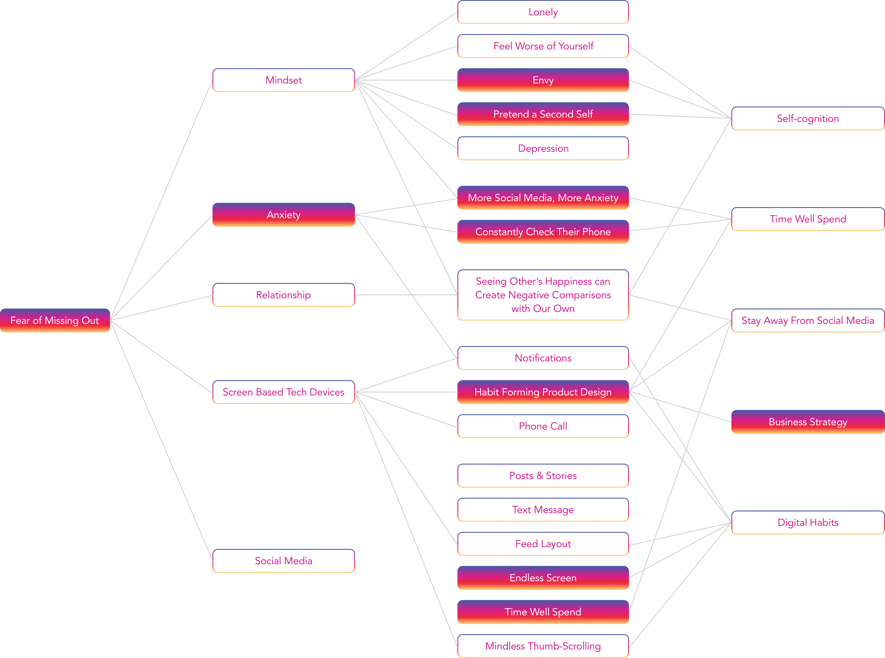
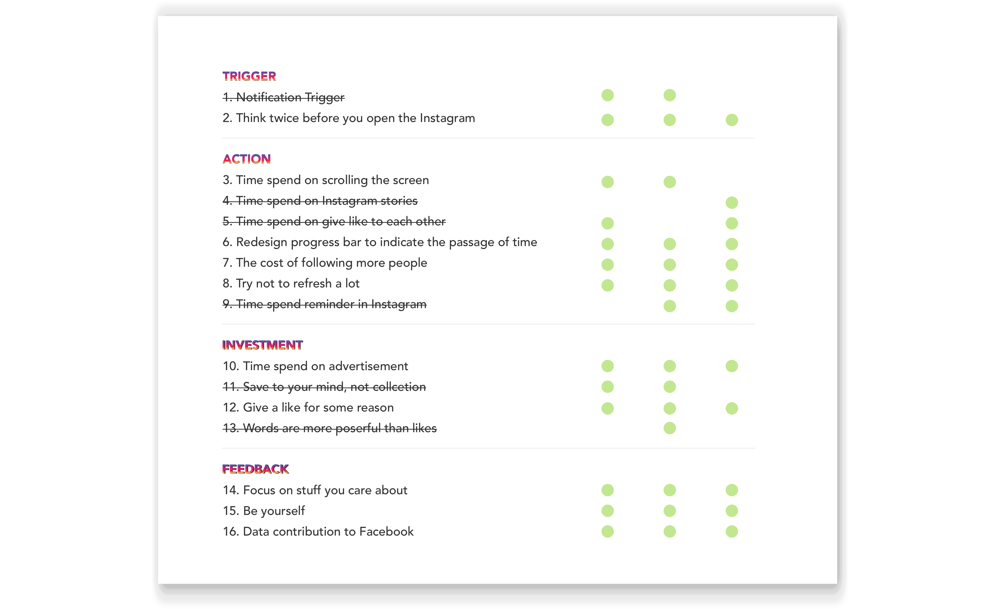

Hooked: 10 Design Interventions Inside the Instagram Interface
Speculative Design / UX / UI
Individual Works
New York
Nov. 2018 - Dec. 2018

"We use Instagram as a social currency that takes up a lot of time and energy every day. What if I re-designed Instagram in a way that makes it more difficult to use, but maintain a healthier relationship between people and evoke self-reflection to ourselves?"

Young girl reading from mobile phone screen in metro by Matej Kastelic, 2018
Waiting in airport terminal by Jaromír Chalabala, 2018
Young woman looking at the phone at a business meeting by Milenko Đilas, 2018
"People are found sweeping their phone everywhere"
RESEARCH WORK
The average person touches, swipes, or clicks their phone 2,617 times a day
People pick up their phone 100 times and spend an average of 2.5h on their mobile phones every day
Almost 20% of people with social media accounts cannot go more than three hours without checking them
Being away from their social media for a 15 minutes can cause severe anxiety for 37% of users
The more technology we acquire, the more stressed out we become


"Many people are found tapping on their phones all day, immersed in a virtual world, the world of social media. They believe they are "connected," but very often this habit creates feelings of loneliness and envy. That's because the virtual space tricks the viewer into thinking that everyone else is having an amazing time. This leads to anxiety and depression as individuals ask themselves negative questions, and might even lie about themselves, which produces anxiety in their viewers"
-- Fear of Missing Out
5W2H
PERSONA
14-30 years old (the most active age group) social media users
MIND MAP
All the issue related to FOMO could be attributed to the following 5 categories: Self-cognition, Time Well Spent, Stay Away From Social Media, Business Strategy and digital habits.

PRECEDENT
Follow these 5 categories, I found some precedent to this topic.
HOW DO SUCCESSFUL COMPANIES CREATE PRODUCTS PEOPLE CAN’T PUT DOWN?
Why do some products capture widespread attention while others flop? What makes us engage with certain products out of sheer habit? Is there a pattern underlying how technologies hook us? Nir Eyal answers these questions (and many more) by explaining the Hook Model—a four-step process embedded into the products of many successful companies to subtly encourage customer behavior.
BUSINESS STRATEGY
The business strategy behind this problem is the heart of habit-forming technology and how do companies manufacture desire by guiding users through a series of experiences designed to create habits.
The company starts by with both external and internal triggers. By cycling continuously through these hooks, users begin to form associations with internal triggers, which become attached to existing behaviors and emotions. After that, companies leverage two pulleys of human behavior – motivation and ability. Variable rewards are tools that companies use to hook users, it contributes to the feedback loop that users take action and receive rewards. The last phase of the Hook is the user is asked to do a bit of work. The investment generally comes in the form of asking the user to give some combination of time, data, effort, social capital or money.
DESIGN STATEMENT
"Base on the most popular social media platform Instagram, I want to raise people’s awareness of how FOMO hook them to the social media and influence the communication and relationship between social media users in a critical way. Through change some part in the Instagram which designed to hook users to the platform, users could spend their time wisely and build a healthier relationship between each other."
RESEARCH QUESTIONS
1) Which part in the Instagram is designed to hook users to the platform and how could I make some changes?
2) How could I raise people’s awareness of their time spend on Instagram?
3) How could I change the current relationship between users build by Instagram?
INSTAGRAM HOOKED MODEL
I applied the Hooked Model to the Instagram and analysis the internal triggers, external triggers, actions, feedbacks and investments in Instagram.
PROTOTYPE / WIREFRAME

Try not to refresh a lot

Time spend on advertisement

The cost of following more people

Redesign progress bar to indicate the passage of time
ASSESSMENT
I use my prototype to test the 16 interventions I designed. Then I evaluated them in three aspects: relevance, interaction, and clarity. I finally decided 10 interventions for the final design.
FINAL DESIGN
The cost of following more people

Less filter, be yourself
Redesign progress bar
Hooked: 10 Design Interventions Inside the Instagram Interface